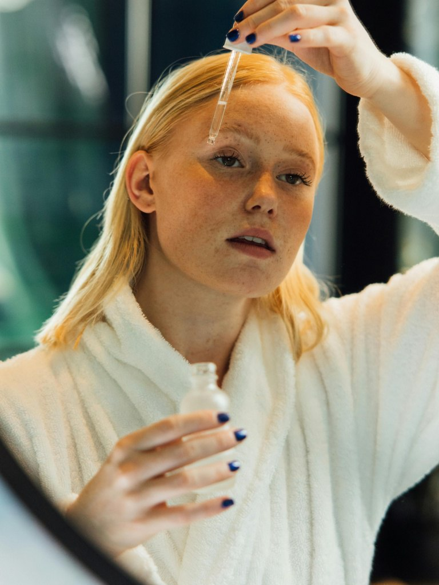

01 / 05
Model Family
02 / 05
Pretraining
Sapiens2 is pretrained on a curated corpus of 1 billion human images covering broad demographics, poses, and contexts.
Sapiens
300 M images
Sapiens 2
1 Billion images
Sapiens2 adopts a unified pretraining objective that combines dense and sparse contrastive losses with masked pixel reconstruction — yielding human representations that are simultaneously semantic and faithful to fine image detail.
03 / 05
Emergent Capabilities
Without any task supervision, Sapiens2 learns dense features that align semantically across subjects — hover a patch on any subject and cosine similarity lights up the corresponding patches on the others.

Subject A · (24, 22)
04 / 05
Segmentation
05 / 05
Normal
@inproceedings{khirodkar2026sapiens2,
title = {Sapiens2: Foundation for Human Vision},
author = {Khirodkar, Rawal and Wen, He and Martinez, Julieta and Dong, Yuan and Zhaoen, Su and Saito, Shunsuke},
booktitle = {International Conference on Learning Representations (ICLR)},
year = {2026}
}